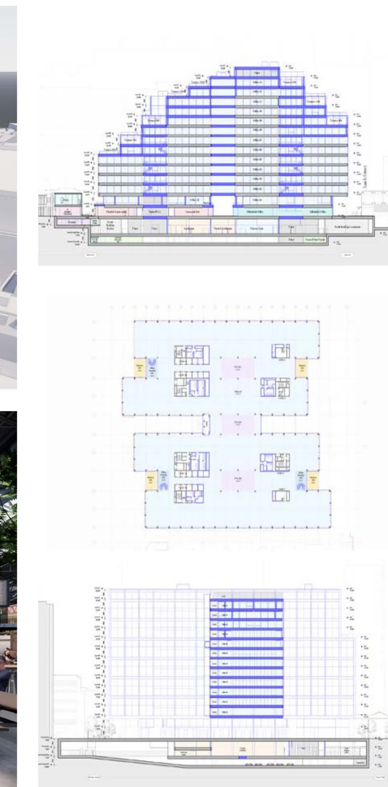
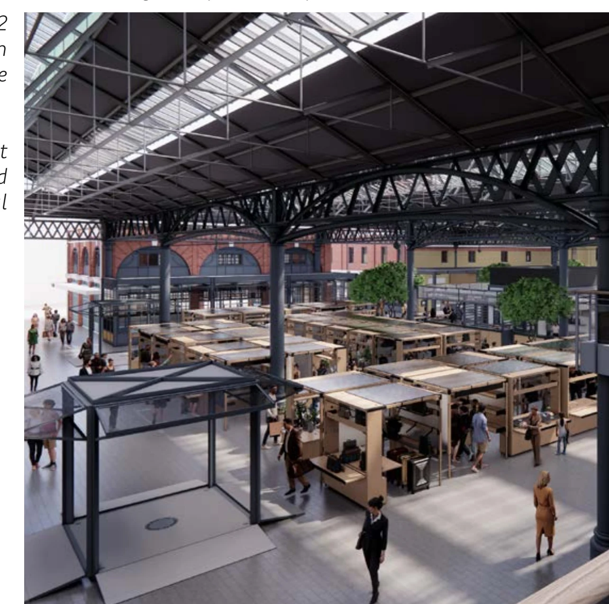
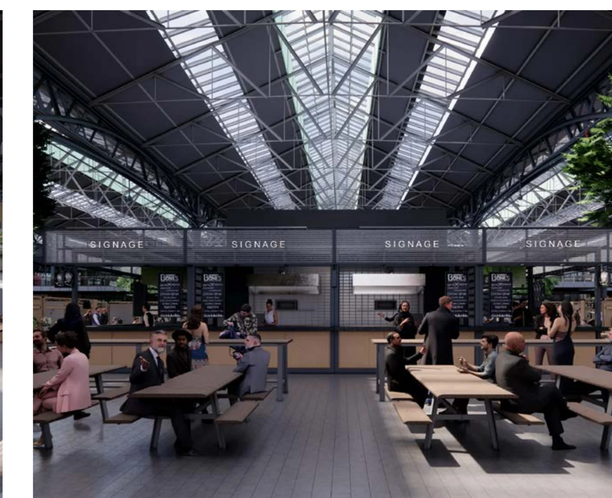

Coordinated architectural model
Developed and maintained coordinated design information across the evolving proposal, supporting design development and the production of drawing packages.
Professional-scale design,
coordination & communication.
A commercial and mixed-use project developed through the transition from RIBA Stage 2 to Stage 3, combining architectural design, extensive Revit documentation and coordinated visual communication.

I contributed to architectural design, visualisation and extensive Revit documentation across the main building, market and affordable workspace as the project moved from Stage 2 into Stage 3.
Developed and maintained coordinated design information across the evolving proposal, supporting design development and the production of drawing packages.
Contributed to the market design and translated coordinated architectural information into clear visual outputs for review and communication.
Worked across different project components while keeping model information and drawing outputs aligned through the Stage 2–3 transition.
My role included producing and coordinating general arrangement and detailed drawing packages across existing, demolition and proposed conditions.
The Revit model was not only a geometric representation; it supported coordinated plans, sections and detailed packages used to communicate changing project information across the team.

Visual outputs were used alongside technical drawings to communicate the project at different scales — from the overall building to the market interior.

Market · proposed view IVisualisation supported the reading of circulation, stall layout and the relationship between the retained market structure and new interventions.

Market · proposed view IIInterior views translated coordinated design information into an inhabitable scene, supporting design review and visual communication.
Working within a multidisciplinary team required consistent model coordination, clear documentation and the ability to translate complex architectural information between technical and visual formats.